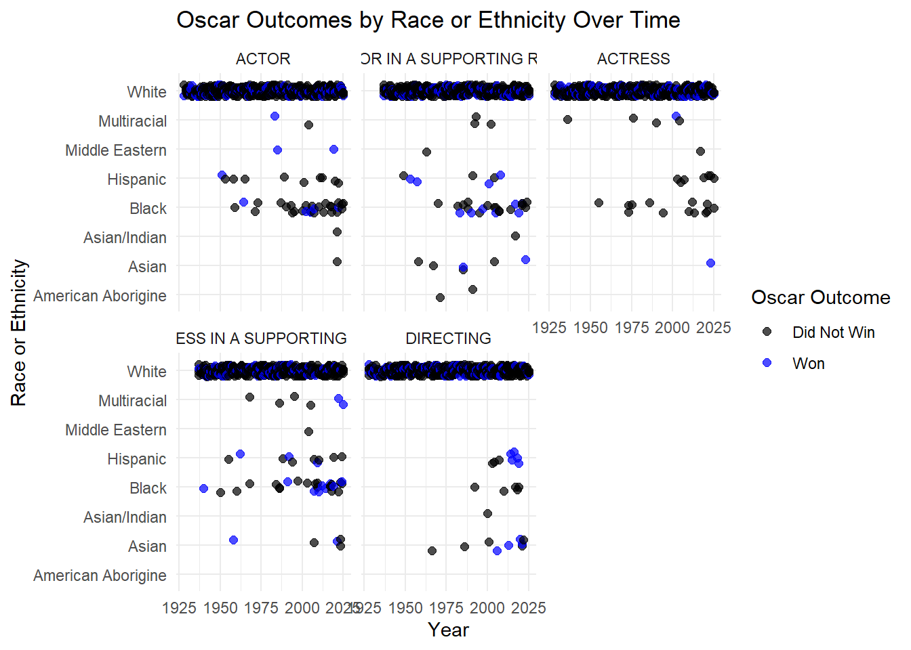

── Conflicts ────────────────────────────────────────── tidyverse_conflicts() ──
✖ dplyr::filter() masks stats::filter()
✖ dplyr::lag() masks stats::lag()
ℹ Use the conflicted package (<http://conflicted.r-lib.org/>) to force all conflicts to become errors
Rows: 2331 Columns: 12
── Column specification ────────────────────────────────────────────────────────
Delimiter: ","
chr (9): Name, Category, Film, Birth_Place, Gender, Race or Ethnicity, Sexu...
dbl (1): Year_Ceremony
lgl (1): Win_Oscar?
date (1): Birth_Date
ℹ Use `spec()` to retrieve the full column specification for this data.
ℹ Specify the column types or set `show_col_types = FALSE` to quiet this message.
Since their debut in 1929, the Academy Awards also known as the Oscars, have been one of the film industry’s most prestigious honors, recognizing excellence in cinematic achievement. While the ceremony highlights outstanding talent, questions about representation and diversity have long surrounded its history. This project examines just that with this data set that compiles demographic information on all nominees and winners in major Oscar categories (Best Actor, Best Actress, Best Supporting Actor, Best Supporting Actress, and Best Director) from 1928 through 2025. The data set contains 2331 observations with 12 variables. The main variables of interest are Category, Win_Oscar?, Year_Ceremony, Gender, Race or Ethnicity and Sexual orientation.
The data come from Kaggle. Linked here:https://www.kaggle.com/datasets/valettel/the-oscar-award-demographics-1928-2025
It is important to note that some of the observations contained Na values for some variables. These Nas have been dropped. Also, the “Win_Oscar?” variable has been changed to a binary variable titled “Oscar_Won” where 1 means the Oscar was won. This is to allow for easier interpretations.
Primary Visualizations:
Investigating on who Wins an Oscar for Each Category Throughout the Years
Race or Ethnicity
race <- Oscars |>filter(`Race or Ethnicity`!="Na") ggplot(race, aes(x = Year_Ceremony, y =`Race or Ethnicity`, color =factor(Oscar_Won))) +geom_jitter(height =0.2, width =0, size =2, alpha =0.7) +facet_wrap(~Category) +labs(x ="Year",y ="Race or Ethnicity",title ="Oscar Outcomes by Race or Ethnicity Over Time",color ="Oscar Outcome" ) +scale_color_manual(values =c("0"="black", "1"="blue"),labels =c("Did Not Win", "Won")) +theme_minimal()

This visualization plots Oscar nominees and winners over time by race or ethnicity. Each point represents a nominee, with color indicating whether the nominee won the award. Across nearly all categories and years, the plot shows a dense concentration of points for white nominees, indicating that white individuals make up the overwhelming majority of both nominees and winners throughout the history of the Oscars.
Non-white racial or ethnic groups appear much less frequently on the graph, suggesting that nominees from these groups have historically been underrepresented. In earlier decades especially, the visualization shows almost no representation for many minority groups, reflecting the broader lack of diversity in the film industry during much of the twentieth century. In more recent years, there appears to be a slight increase in representation for some non-white nominees, though the number of points is still relatively small compared to the number of white nominees.
This visualization examines Oscar nominations and wins across time by sexual orientation. Similar to the race analysis, each point represents a nominee, with color indicating whether the individual won the award. The plot shows that the vast majority of nominees and winners are identified as straight, with relatively few observations for other sexual orientation categories.
For many years, the graph shows little representation for openly LGBTQ+ individuals (many data points were removed because they were labeled as Na meaning unknown sexual orientation). This pattern likely reflects both historical industry barriers and the fact that many actors, directors, and other film professionals did not publicly disclose their sexual orientation due to social and professional pressures. As a result, the dataset may underrepresent LGBTQ+ individuals who were not publicly identified. Overall, the visualization suggests that heterosexual individuals dominate both nominations and wins, indicating limited representation of openly LGBTQ+ individuals among Oscar nominees and recipients throughout the award’s history.
Because the acting categories are separated by gender (Best Actor vs. Best Actress), the Directing category provides a clearer opportunity to evaluate gender representation in a single award category. In this visualization, each point represents a nominee for Best Director, with color indicating whether the nominee won the Oscar.
The graph shows that male directors overwhelmingly dominate both nominations and wins across nearly the entire history of the category. Most points appear on the “Male” row of the plot, indicating that men have historically received the vast majority of nominations. In contrast, female directors appear only occasionally, reflecting the limited number of women nominated for the award.
According to the dataset, women have received only 10 total nominations and 3 wins in the Best Director category over nearly a century of Academy Awards. This stark imbalance highlights the significant gender gap in recognition for directing, which mirrors broader inequalities in leadership roles within the film industry. While the presence of female nominees appears to increase slightly in recent decades, the overall pattern still shows that male directors have historically dominated both nominations and wins in this category.
Conclusion and Wrap-Up:
Taken together, these visualizations suggest that representation among Oscar nominees and winners has historically been uneven across several demographics. White, straight, and male individuals appear far more frequently among nominees and winners than individuals from other racial, sexual orientation, or gender groups. These patterns likely reflect inequalities in the film industry, including access to opportunities, visibility, and recognition. Although the graphs suggest some gradual increases in diversity in recent years, the overall trends indicate that the Oscars have historically favored certain demographic groups, raising important questions about representation and inclusivity in one of the film industry’s most influential award systems.
Connection to Class Ideas:
These visualizations connect to class concepts by practicing graph skills especially in how to appropriately display data. To achieve the project’s goal I struggled with the logic on how to display the data that was correct. Which helped my practice data ethics in displaying data and graph skills.